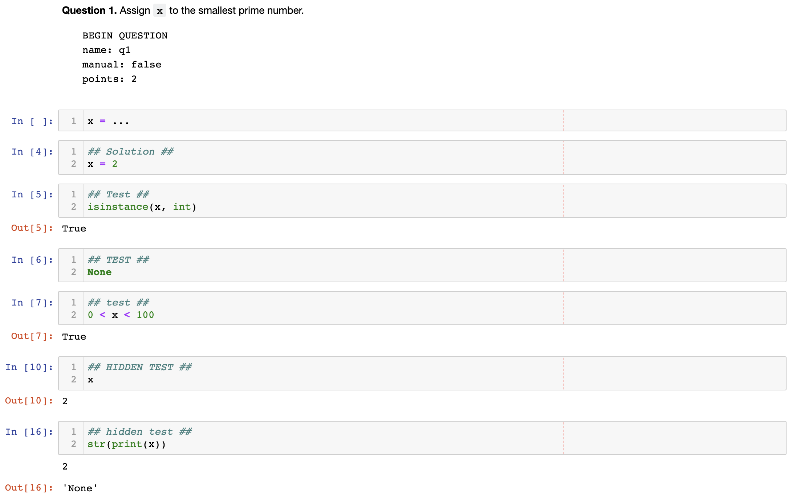
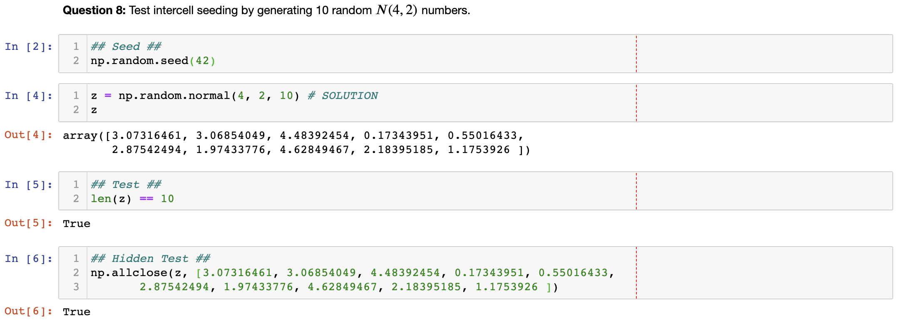
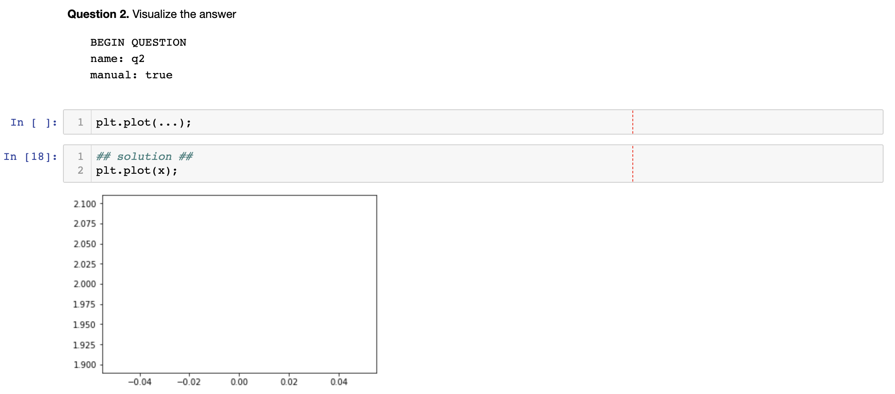

Otter ships with an assignment development and distribution tool called Otter Assign, an Otter-compliant fork of jassign that was designed for OkPy. Otter Assign allows instructors to create assignments by writing questions, prompts, solutions, and public and private tests all in a single notebook, which is then parsed and broken down into student and autograder versions.
Otter’s notebook format groups prompts, solutions, and tests together into prompts. Autograder tests are specified as cells in the notebook and their output is used as the expected output of the autograder when genreating tests. Each question has metadata, expressed in a code block in YAML format when the question is declared. Tests generated by Otter Assign follow the Otter-compliant OK format.
Note: Otter Assign is also backwards-compatible with jassign-formatted notebooks. To use jassign format with Otter Assign, specify the --jassign flag in your call to otter assign. While the formats are very similar, jassign’s format has some key differences to the Otter Assign format, and many of the behaviors described below, e.g. intercell seeding, are not compatible with jassign format. For more information about formatting notebooks for jassign, see its documentation.
--jassign
otter assign
In addition to various command line arugments discussed below, Otter Assign also allows you to specify various assignment generation arguments in an assignment metadata cell. These are very similar to the question metadata cells described in the next section. Assignment metadata, included by convention as the first cell of the notebook, places YAML-formatted configurations inside a code block that begins with BEGIN ASSIGNMENT:
BEGIN ASSIGNMENT
``` BEGIN ASSIGNMENT init_cell: false export_cell: true ... ```
This cell is removed from both output notebooks. These configurations, listed in the table below, can be overwritten by their command line counterparts (e.g. init_cell: true is overwritten by the --no-init-cell flag). The options, their defaults (converted to Python data types), and descriptions are listed in the following table. Any unspecified keys will keep their default values. For more information about many of these arguments, see the Usage and Output section.
init_cell: true
--no-init-cell
init_cell
True
export_cell
filtering
instructions
''
check_all_cell
otter.Notebook.check_all
run_tests
solutions_pdf
False
true
false
filtered
generate
files
[]
A note about Otter Generate: the generate key of the assignment metadata has two forms. If you just want to generate and require no additional arguments, set generate: true in the YAML and Otter Assign will simply run otter generate from the autograder directory (this will also include any files passed to files). If you require additional arguments, e.g. points or show_results, then set generate to a nested dictionary of these parameters and their values:
generate: true
otter generate
points
show_results
generate: seed: 42 show_results: true
These values, if left unspecified, take on the default values of their flags as described in Otter Generate.
As an example, the following assignment metadata includes an export cell but no filtering, not init cell, and calls Otter Generate with the flags --points 3 --seed 0.
--points 3 --seed 0
``` BEGIN ASSIGNMENT filtering: false init_cell: false generate: points: 3 seed: 0 ```
Here is an example question in an Otter Assign-formatted notebook:

For code questions, a question is a description Markdown cell, followed by a solution code cell and zero or more test code cells. The description cell must contain a code block (enclosed in triple backticks ```) that begins with BEGIN QUESTION on its own line, followed by YAML that defines metadata associated with the question.
```
BEGIN QUESTION
The rest of the code block within the description cell must be YAML-formatted with the following fields (in any order):
name (required) - a string identifier that is a legal file name (without an extension)
name
manual (optional) - a boolean (default False); whether to include the response cell in a PDF for manual grading
manual
points (optional) - a number (default 1); how many points the question is worth
1
As an example, the question metadata below indicates an autograded question q1 worth 1 point.
q1
``` BEGIN QUESTION name: q1 manual: false ```
Solution cells contain code formatted in such a way that the assign parser replaces lines or portions of lines with prespecified prompts. Otter uses the same solution replacement rules as jassign. From the jassign docs:
A line ending in # SOLUTION will be replaced by ..., properly indented. If that line is an assignment statement, then only the expression(s) after the = symbol will be replaced.
# SOLUTION
...
=
A line ending in # SOLUTION NO PROMPT will be removed.
# SOLUTION NO PROMPT
A line # BEGIN SOLUTION or # BEGIN SOLUTION NO PROMPT must be paired with a later line # END SOLUTION. All lines in between are replaced with ... or removed completely in the case of NO PROMPT.
# BEGIN SOLUTION
# BEGIN SOLUTION NO PROMPT
# END SOLUTION
NO PROMPT
A line """ # BEGIN PROMPT must be paired with a later line """ # END PROMPT. The contents of this multiline string (excluding the # BEGIN PROMPT) appears in the student cell. Single or double quotes are allowed. Optionally, a semicolon can be used to suppress output: """; # END PROMPT
""" # BEGIN PROMPT
""" # END PROMPT
# BEGIN PROMPT
"""; # END PROMPT
def square(x): y = x * x # SOLUTION NO PROMPT return y # SOLUTION nine = square(3) # SOLUTION
would be presented to students as
def square(x): ... nine = ...
And
pi = 3.14 if True: # BEGIN SOLUTION radius = 3 area = radius * pi * pi # END SOLUTION print('A circle with radius', radius, 'has area', area) def circumference(r): # BEGIN SOLUTION NO PROMPT return 2 * pi * r # END SOLUTION """ # BEGIN PROMPT # Next, define a circumference function. pass """; # END PROMPT
pi = 3.14 if True: ... print('A circle with radius', radius, 'has area', area) def circumference(r): # Next, define a circumference function. pass
The test cells are any code cells following the solution cell that begin with the comment ## Test ## or ## Hidden Test ## (case insensitive). A Test is distributed to students so that they can validate their work. A Hidden Test is not distributed to students, but is used for scoring their work.
## Test ##
## Hidden Test ##
Test
Hidden Test
Note: Currently, the conversion to OK format does not handle multi-line tests if any line but the last one generates output. So, if you want to print twice, make two separate test cells instead of a single cell with:
print(1) print(2)
Otter assign maintains support for intercell seeding by allowing seed cells to be placed between question cells and solution cells. To create a seed cell, put ## Seed ## (case insensitive) on the first line of a code cell between the two. This allows instructors to write code with deterministic output, with which hidden tests can be generated. Consider the following example:
## Seed ##

Note that seed cells are removed in student and autograder outputs, so any results in those notebooks may be different from the provided tests. The intent of removing the seed from the autograder notebook is to keep the value of the seed secure, so that if this notebook is released as assignment solutions, the security of the hidden tests is maintained. However, when grading, seeds are executed between each cell, so if you are using seeds, make sure to use the same seed every time and that you have a seed cell before each code cell, to ensure that seeding before every cell won’t affect your tests.
Otter Assign also supports manually-graded questions using a similar specification to the one described above. To indicate a manually-graded question, set manual: true in the question metadata. A manually-graded question is defined by three parts:
manual: true
A question cell with metadata
(Optionally) a prompt cell
A solution cell
Manually-graded solution cells have two formats:
If a code cell, they can be delimited by solution removal syntax as above.
If a Markdown cell, the start of at least one line must match the regex (<strong>|\*{2})solution:?(<\/strong>|\*{2}).
(<strong>|\*{2})solution:?(<\/strong>|\*{2})
The latter means that as long as one of the lines in the cell starts with SOLUTION (case insensitive, with or without a colon :) in boldface, the cell is considered a solution cell. If there is a prompt cell for manually-graded questions (i.e. a cell between the question cell and solution cell), then this prompt is included in the output. If none is present, Otter Assign automatically adds a Markdown cell with the contents _Type your answer here, replacing this test._.
SOLUTION
:
_Type your answer here, replacing this test._
Manually graded questions are automatically enclosed in <!-- BEGIN QUESTION --> and <!-- END QUESTION --> tags by Otter Assign so that only these questions are exported to the PDF when filtering is turned on (the default). In the autograder notebook, this includes the question cell, prompt cell, and solution cell. In the student notebook, this includes only the question and prompt cells. The <!-- END QUESTION --> tag is automatically inserted at the top of the next cell if it is a Markdown cell or in a new Markdown cell before the next cell if it is not.
<!-- BEGIN QUESTION -->
<!-- END QUESTION -->
An example of a manually-graded code question:

An example of a manually-graded written question (with no prompt):
An example of a manuall-graded written question with a custom prompt:
Otter Assign is called using the otter assign command. This command takes in two required arguments.
$ otter assign --help usage: otter assign [-h] [--no-export-cell] [--no-run-tests] [--no-init-cell] [--no-check-all] [--no-filter] [--instructions INSTRUCTIONS] [--jassign] [--debug] [--generate] [-r [REQUIREMENTS]] [--threshold THRESHOLD] [--points POINTS] [--seed SEED] [--show-results] master result [files [files ...]] Create distribution versions of Otter Assign-formatted notebook positional arguments: master Notebook with solutions and tests. result Directory containing the result. files Other support files needed for distribution (e.g. .py files, data files) optional arguments: -h, --help show this help message and exit --no-export-cell Don't inject an export cell into the notebook --no-run-tests Don't run tests. --no-init-cell Don't automatically generate an Otter init cell --no-check-all Don't automatically add a check_all cell --no-filter Don't filter the PDF. --instructions INSTRUCTIONS Additional submission instructions for students --jassign Use jassign notebook format --debug Do not ignore errors in running tests for debugging --generate Generate Gradescope autograder zipfile -r [REQUIREMENTS], --requirements [REQUIREMENTS] Path to requirements.txt file; ./requirements.txt automatically checked; use with --generate only --threshold THRESHOLD Pass/fail score threshold; use with --generate only --points POINTS Points possible, overrides sum of test points; use with --generate only --seed SEED A random seed to be executed before each cell; use with --generate only --show-results Show autograder test results (P/F only, no hints) after publishing grades (incl. hidden tests); use with --generate only
The first is master, the path to the master notebook (the one formatted as described above), and the second is result, the path at which output shoud be written. The optional files argument takes an arbitrary number of paths to files that should be shipped with notebooks (e.g. data files, images, Python executables).
master
result
The default behavior of Otter Assign is to do the following:
Filter test cells from the master notebook and write these to test files
Add Otter initialization, export, and Notebook.check_all cells
Notebook.check_all
Clear outputs and write questions (with metadata hidden), prompts, and solutions to a notebook in a new autograder directory
autograder
Write all tests to autograder/tests
autograder/tests
Copy autograder notebook with solutions removed into a new student directory
student
Write public tests to student/tests
student/tests
Copy files into autograder and student directories
Run all tests in autograder/tests on the solutions notebook to ensure they pass
(If --generate is passed,) generate a Gradescope autograder zipfile from the autograder directory
--generate
The behaviors described in step 2 can be overridden using the optional arguments described in the help specification.
An important note: make sure that you run all cells in the master notebook and save it with the outputs so that Otter Assign can generate the test files based on these outputs. The outputs will be cleared in the copies generated by Otter Assign.
For more information about the commands linked to --generate, see the documentation for Otter Generate.
By default, Otter Assign adds an initialization cell at the top of the notebook with the contents
# Initialize Otter import otter grader = otter.Notebook()
To prevent this behavior, add the --no-init-cell flag.
Otter Assign also automatically adds a check-all cell and an export cell to the end of the notebook. The check-all cells consist of a Markdown cell:
To double-check your work, the cell below will rerun all of the autograder tests.
and a code cell that calls otter.Notebook.check_all:
grader.check_all()
The export cells consist of a Markdown cell:
## Submission Make sure you have run all cells in your notebook in order before running the cell below, so that all images/graphs appear in the output. **Please save before submitting!**
and a code cell that calls otter.Notebook.export with HTML comment filtering:
otter.Notebook.export
# Save your notebook first, then run this cell to export. grader.export("/path/to/notebook.ipynb")
To prevent the inclusion of a check-all cell, use the --no-check-all flag. To prevent cell filtering in the export cell, use the --no-filter flag. To remove the export cells entirely, use the --no-export-cell tag. If you have custom instructions for submission that you want to add to the export cell, pass them to the --instructions flag.
--no-check-all
--no-filter
--no-export-cell
--instructions
Note: Otter Assign currently only supports HTML comment filtering. This means that if you have other cells you want included in the export, you must delimit them using HTML comments, not using cell tags.
Consider the directory stucture below, where hw00/hw00.ipynb is an Otter Assign-formatted notebook.
hw00/hw00.ipynb
| hw00 | - hw00.ipynb | - data.csv
To generate the distribution versions of hw00.ipynb (after cding into hw00), I would run
hw00.ipynb
cd
hw00
otter assign hw00.ipynb dist
This will create a new folder called dist with autograder and student as subdirectories, as described above.
dist
| hw00 | - hw00.ipynb | - data.csv | dist | autograder | - hw00.ipynb | tests | - q1.py | - q2.py ... | student | - hw00.ipynb | tests | - q1.py | - q2.py ...
If I had wanted to include data.csv in the distribution folders, I would change my call to
data.csv
otter assign hw00.ipynb dist data.csv
The resulting directory structure would be:
| hw00 | - hw00.ipynb | - data.csv | dist | autograder | - data.csv | - hw00.ipynb | tests | student | - data.csv | - hw00.ipynb | tests
In generating the distribution versions, I can prevent Otter Assign from rerunning the tests using the --no-run-tests flag:
--no-run-tests
otter assign --no-run-tests hw00.ipynb dist data.csv
If I wanted no initialization cell and no cell filtering in the export cell, I would run
otter assign --no-init-cell --no-filtering hw00.ipynb dist data.csv